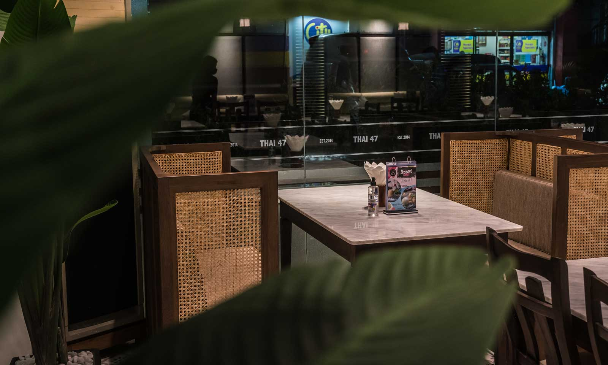
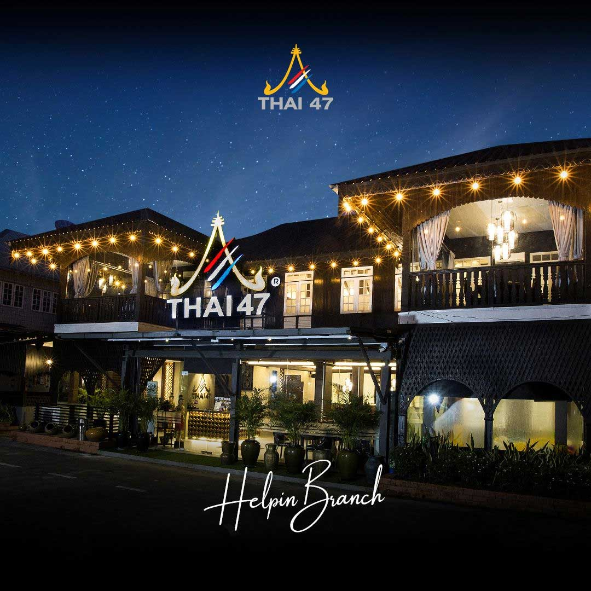

At 47 F&B Group, we’re committed to delivering a dynamic dining experience with flavors from around the globe. Whether you're craving the bold spices of Thai cuisines or the delicate artistry of Japanese dishes, we’ve got something for everyone. Join us in one of our vibrant locations across Yangon and let us take you on a journey through exceptional food, warm hospitality, and unforgettable memorie.
What Our Diners Says
At 47 F&B Group, we’re committed to delivering a dynamic dining experience with flavors from around the globe. Whether you're craving the bold spices of Thai cuisines or the delicate artistry of Japanese dishes, we’ve got something for everyone. Join us in one of our vibrant locations across Yangon and let us take you on a journey through exceptional food, warm hospitality, and unforgettable memorie.


Downtown Branch
Established in 2014, Thai 47 Downtown marks the beginning of the 47 Group's journey, setting the stage for a legacy of exceptional dining experiences. Located in a prime downtown area, this flagship outlet serves a bustling crowd with a menu featuring light Thai cuisine, aromatic Thai tea, and rich coffee. Thai 47 Downtown is not just a restaurant; it's where our story began, inviting customers to be a part of our continuing adventure. The restaurant has earned the Tripadvisor Certificate of Excellence award in 2017 and 2018 consecutively, recognizing its outstanding service and quality.
No.153, Corner of 47th Street and Anawyahtar Road, Botahtaung Township, Yangon, MyanmarKyauk Kone Branch
Launched in 2015 in response to increasing customer demand, Thai 47 Kyauk Kone quickly became a leading presence on the once-quiet Kyauk Kone Road. The restaurant features expansive dining spaces, including elegantly appointed indoor, outdoor, and private areas, all designed to enhance the dining experience. We take pride in offering authentic Thai cuisine and exemplary customer service, establishing ourselves as a cornerstone of the local food scene. Our commitment to excellence was recognized in both 2023 and 2024 when we received the prestigious foodpanda Best Performing Restaurant Award and a Certificate of Excellence, further affirming our status as a favorite destination for casual diners.
No.308, Ahlone Road, Dagon Township Yangon, Myanmar

Helpin Branch
Guided by the owner's vision, Thai 47 Helpin opened its doors in 2017 near the Royal-Thai Embassy and other prestigious diplomatic posts. This upscale establishment serves authentic Thai cuisine in an elegant setting, where the decor seamlessly blends Burmese and Thai cultural elements. The ambiance is perfect for both intimate celebrations and corporate events. Popular dishes, such as the Grilled Pork Neck, Tom Yam Kung, and Traditional Seabass Tamarind Sauce, consistently receive acclaim for their authentic flavors and high-quality preparation. At Thai 47 Helpin, every detail reflects a commitment to excellence and a passion for delivering memorable dining experiences.
No.308, Ahlone Road, Dagon Township Yangon, Myanmar